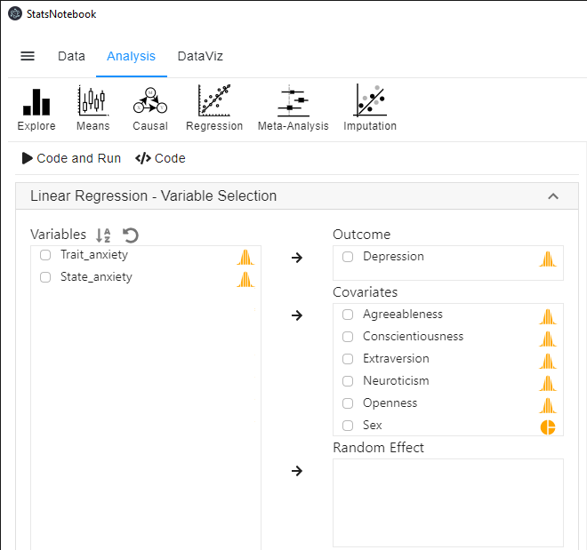
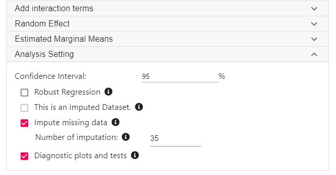
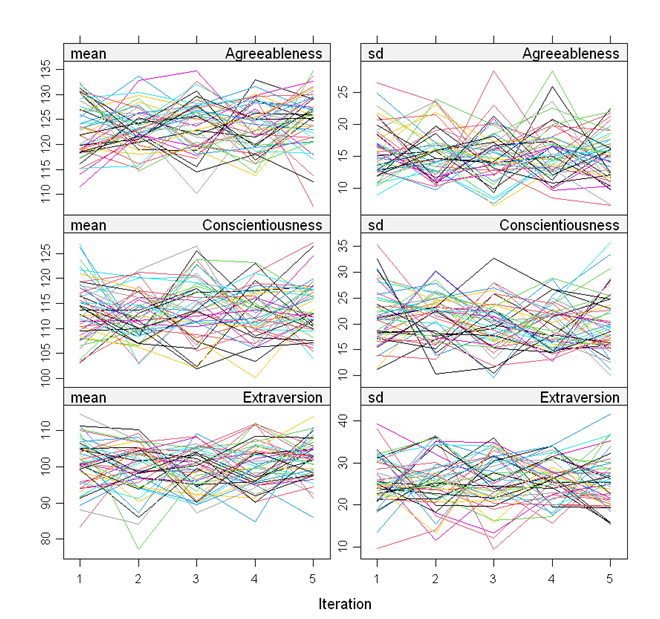

Tags: Analysis, R code, Regression
In many area of research, missing data is a norm rather than an exception. Dropping observations/ participants with missing data is usually not appropriate as it reduces statistical power and also may introduce bias in analysis. This tutorial will demonstrate a simple way in StatsNotebook to handle missing data using multiple imputation.
In our linear regression tutorial, we use the personality dataset to examine two research qeustions.
In our original analysis, participants with missing data in any of the analysis variables are excluded. The initial sample size is 231. After excluding participants with missing data, the sample size reduces to 155 - a reduction of 33%.
Multiple imputation is a widely used method to handle missing data. This can generally increase power and reduce bias due to missingness. StatsNotebook provides a simple interface to incorporate multiple imputation into linear regression analysis.
This tutorial builds on our tutorial on linear regression, and re-examine the above two research questions using multiple imputation and linear regression. We firstly show the R codes for this analysis, and will provide a step-by-step guide on how to complete this analysis. We use the built-in Personality dataset in this example. This dataset can be loaded into StatsNotebook using instruction here or can be downloaded from here.
"Impute missing data"
library(mice)
formulas <- make.formulas(currentDataset)
formulas$Agreeableness =Agreeableness ~ Conscientiousness + Extraversion + Neuroticism + Openness + Sex + Depression
formulas$Conscientiousness =Conscientiousness ~ Agreeableness + Extraversion + Neuroticism + Openness + Sex + Depression
formulas$Extraversion =Extraversion ~ Agreeableness + Conscientiousness + Neuroticism + Openness + Sex + Depression
formulas$Neuroticism =Neuroticism ~ Agreeableness + Conscientiousness + Extraversion + Openness + Sex + Depression
formulas$Openness =Openness ~ Agreeableness + Conscientiousness + Extraversion + Neuroticism + Sex + Depression
formulas$Sex =Sex ~ Agreeableness + Conscientiousness + Extraversion + Neuroticism + Openness + Depression
formulas$Depression =Depression ~ Agreeableness + Conscientiousness + Extraversion + Neuroticism + Openness + Sex
meth <- make.method(currentDataset)
meth["Trait_anxiety"] <- ""
meth["State_anxiety"] <- ""
imputedDataset <- parlmice(currentDataset,
method = meth,
formulas = formulas,
m = 35,
n.core = 15,
n.imp.core = 3)
plot(imputedDataset)
currentDataset <- complete(imputedDataset, action = "long", include = TRUE)
"Linear regression"
res <- with(imputedDataset,
lm(Depression ~ Agreeableness + Conscientiousness + Extraversion + Neuroticism + Openness + Sex))
summary(pool(res), conf.int = TRUE, conf.level = 0.95)
res1 <- res$analyses[[1]]
library(car)
res.std <- rstandard(res1)
plot(res.std, ylab="Standardized Residuals")
"Outlier Test. Observations with a Bonferroni p < .05 might be considered as outliers and might need further investigation."
outlierTest(res1)
infIndexPlot(res1)
"Residual plots, curvature tests and normality plot"
residualPlots(res1)
ggplot(as.data.frame(res.std), aes(sample = res.std)) +
geom_qq() +
geom_qq_line()
"Variance inflation factor (VIF >=5 indicates high level of multicollinearity)"
vif(res1)
"Chan, G. and StatsNotebook Team (2020). StatsNotebook. (Version 0.1.0) [Computer Software]. Retrieved from https://www.statsnotebook.io"
"R Core Team (2020). The R Project for Statistical Computing. [Computer software]. Retrieved from https://r-project.org"
Prior to running the linear regression analysis, it is always a good practice to visualise the data and conduct descriptive analysis.
To conduct multiple imputation and linear regression analysis,


The following is from the top section of the generated codes.
library(mice)
formulas <- make.formulas(currentDataset)
formulas$Agreeableness =Agreeableness ~ Conscientiousness + Extraversion + Neuroticism + Openness + Sex + Depression
formulas$Conscientiousness =Conscientiousness ~ Agreeableness + Extraversion + Neuroticism + Openness + Sex + Depression
formulas$Extraversion =Extraversion ~ Agreeableness + Conscientiousness + Neuroticism + Openness + Sex + Depression
formulas$Neuroticism =Neuroticism ~ Agreeableness + Conscientiousness + Extraversion + Openness + Sex + Depression
formulas$Openness =Openness ~ Agreeableness + Conscientiousness + Extraversion + Neuroticism + Sex + Depression
formulas$Sex =Sex ~ Agreeableness + Conscientiousness + Extraversion + Neuroticism + Openness + Depression
formulas$Depression =Depression ~ Agreeableness + Conscientiousness + Extraversion + Neuroticism + Openness + Sex
meth <- make.method(currentDataset)
meth["Trait_anxiety"] <- ""
meth["State_anxiety"] <- ""
imputedDataset <- parlmice(currentDataset,
method = meth,
formulas = formulas,
m = 35,
n.core = 15,
n.imp.core = 3)
plot(imputedDataset)
currentDataset <- complete(imputedDataset, action = "long", include = TRUE)
We use the mice library in R to perform multiple imputation. The above codes firstly specifies how each variables are imputed. Only variables used in the regression analysis will be used for imputation. To include additional variables in the imputation, see the multiple imputation.
The only visible output is a set of diagnostic plot. The lines in all plots should be freely intermingled. Non-convergence will be indicated by clearly separated lines.

The following codes are then used to conduct linear regression using the imputed datasets.
"Linear regression"
res <- with(imputedDataset,
lm(Depression ~ Agreeableness + Conscientiousness + Extraversion + Neuroticism + Openness + Sex))
summary(pool(res), conf.int = TRUE, conf.level = 0.95)
Below is the output from this analysis.
term estimate std.error statistic df p.value
1 (Intercept) 7.715447666 3.12663997 2.46764825 174.0538 1.456720e-02
2 Agreeableness -0.001189368 0.02497579 -0.04762083 158.8576 9.620782e-01
3 Conscientiousness -0.018990634 0.01964996 -0.96644620 130.7906 3.356046e-01
4 Extraversion -0.013549340 0.01559403 -0.86887995 176.7667 3.860910e-01
5 Neuroticism 0.128537235 0.01657551 7.75464787 165.6124 8.557599e-13
6 Openness -0.060743216 0.02205921 -2.75364405 134.9948 6.705879e-03
7 SexMale -1.227802866 0.76103616 -1.61333051 195.1378 1.082887e-01
2.5 % 97.5 %
1 1.54443849 13.88645685
2 -0.05051680 0.04813806
3 -0.05786353 0.01988226
4 -0.04432377 0.01722509
5 0.09581069 0.16126378
6 -0.10436956 -0.01711687
7 -2.72871486 0.27310912
In this example, the coefficients of the 5 personality traits from the analysis using imputation are similar to those from complete data analysis. However, it should be noted that the p-value of openness is now much smaller, indicating that the evidence for the association between openness and depression was stronger (despite the effect size being similar). This is due to increase power from multiple imputation.
Table 1. Results from linear regression.
| Variables | b | 95% CI | p |
|---|---|---|---|
| Agreeableness | -0.00 | (-0.05, 0.05) | 0.962 |
| Conscientiousness | -0.02 | (-0.02, 0.02) | 0.336 |
| Extraversion | -0.01 | (-0.04, 0.02) | 0.386 |
| Neuroticism | 0.13 | (0.10, 0.16) | < .001 |
| Openness | -0.06 | (-0.10, -0.02) | .007 |
| Sex (Ref: Female) | |||
| Male | -1.23 | (-2.73, 0.27) | 0.108 |
The intial sample consists of 231 participants. Seventy six participants (33%) have missing data in at least one of the analysis variable. Thirty-five datasets were imputed using multiple imputation to fill in the missing values (Rubin, 2009). Linear regression is used to examine the association between depression and agreeableness, conscientiousness, extraversion, neuroticism, openness and sex. Results are shown in Table 1. Using a significance level of 0.05, results indicate that higher neuroticism (b = 0.13, 95% CI [0.09, 0.16], p < .001) and lower openness (b = -0.06, 95% CI [-0.10, -0.02], p = .007) are associated with depression. Other variables are not significantly associated with depression, and their effects are close to zero. Analyses are conducted in StatsNotebook (Chan and StatsNotebook Team, 2020) with R (R Core Team, 2020)
At the moment, model diagnostic is not based on the first imputed dataset. The interpretation for the model diagnostic is thus the same as those for analysis based on complete data analysis.
Chan, G. and StatsNotebook Team (2020). StatsNotebook. [Computer Software]. Retrieved from https://www.statsnotebook.io
Chan, G (2020). Linear regression with missing data. Retrieved from https://www.statsnotebook.io/blog/analysis/regression_missingdata/
R Core Team (2020). The R Project for Statistical Computing. [Computer software]. Retrieved from https://r-project.org
Rubin, D. B. (2009). Multiple imputation for nonresponse in surveys. New York, John Wiley & Sons.